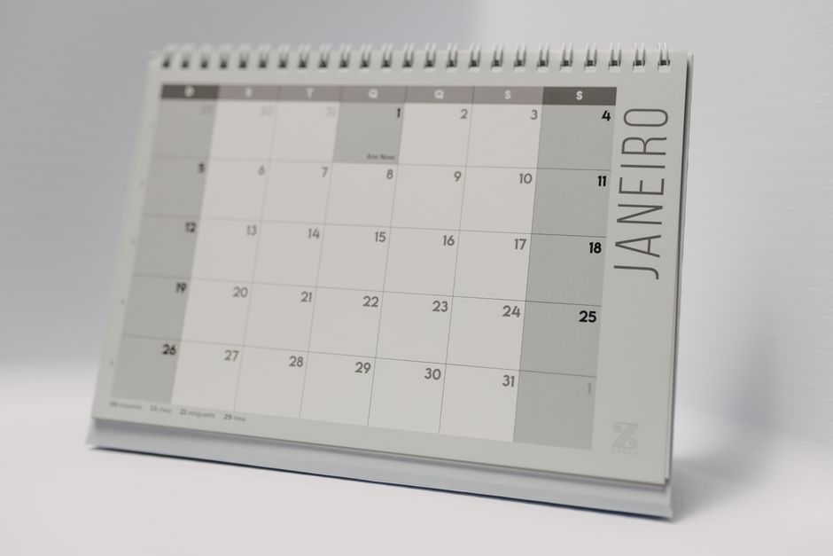

10/12 특공·10/13 1순위 — 청약캘린더에서 내 날짜만 꺼내는 법(순위·가점·17:30 마감)

발행일 2026-10-08
30초 요약
| 항목 | 내용 |
|---|---|
| 캘린더 위치 | 청약홈(applyhome.co.kr) → 청약캘린더. 공고·접수·발표·계약을 월력으로 한눈에 보는 화면 |
| 일정 순서 | 입주자모집공고 → 특별공급 접수 → 1순위(해당지역→기타지역) → 2순위 → 당첨자 발표 → 서류 제출 → 계약 |
| 접수 시간 | 청약신청일 당일 09:00~17:30. 17:30만 넘으면 어떤 이유를 대도 접수가 안 됩니다 |
| 1순위 관문 | 통장 가입기간 지역별 6/12/24개월 + 예치금 200만~1,500만원(거주지 기준). 기준일은 신청일이 아니라 최초 입주자모집공고일 |
| 이번 주 예시 | 2026년 10월은 10/12 특별공급·10/13 1순위·10/14 2순위·10/20 발표로 이어지는 단지들이 몰려 있습니다. 10월 2일 공고난 광명·향남·수원 단지들이 이 흐름 |
| 문의 | 청약홈 1644-7445 (월~금 09:00~17:30, 상담은 참고용) |
1. 누가 봐야 하나
주택청약종합저축을 하나라도 만들어둔 무주택 세대구성원이라면 청약캘린더는 공짜로 볼 수 있는 가장 빠른 알림판입니다. 청약은 공고가 뜨는 날부터 계약까지 6~8주쯤 여러 날짜가 줄줄이 이어지는데, 이걸 모르고 있으면 "접수일인 줄 알았던 날이 사실 특공 날" 식으로 한 박자를 통째로 놓칩니다. 특히 특별공급과 1순위는 하루~이틀 차이로 붙어 있으니, 공고가 나기 전에 캘린더로 윤곽이라도 잡아두는 게 낫습니다.
2. 캘린더 읽는 법
청약홈 청약캘린더는 월력 위에 각 단지의 주택구분과 주택명을 띄웁니다. 날짜를 누르면 그 단지의 단계(모집공고·접수·발표·계약)가 나오고, 단지명을 누르면 입주자모집공고 원문으로 들어갑니다. 다만 캘린더만 봐서는 "내가 1순위인지"는 알 수 없습니다. 캘린더는 일정표일 뿐이고, 자격 판정은 공고 원문과 청약홈의 청약자격확인 메뉴에서 따로 해야 합니다.
| 단계 | 무슨 일이 일어나나 | 확인할 것 |
|---|---|---|
| 입주자모집공고 | 공급 세대수·주택형·자격·일정이 확정 공고. 순위·예치금·무주택 여부가 이 날을 기준으로 판정됩니다 | 해당지역 거주 요건, 당첨자 발표일, 가점제/추첨제 비율 |
| 특별공급 접수 | 신혼부부·생애최초·다자녀·신생아 등 따로 배정된 물량 접수. 보통 일반공급보다 하루~이틀 먼저 | 본인이 해당 유형인지, 특공은 생애 1회 제한 |
| 1순위 접수 | 당일 09:00~17:30 인터넷 접수. 해당지역(공고일 기준 거주지)과 기타지역이 같은 날이거나 하루 차이로 나뉩니다 | 예치금 충족 여부, 주택형 1개만 선택 |
| 2순위 접수 | 1순위 미달일 때만 열림. 예치금·가입기간 상관없이 통장만 있으면 신청 가능 | 인기 단지는 2순위 기회가 거의 없다 |
| 당첨자 발표 | 청약홈 당첨조회에서 확인. 발표일은 단지별로 캘린더에 표시 | 발표 직후 계약 기간이 곧바로 시작되는 단지가 많음 |
| 계약 | 당첨자 대상 계약. 서류가 부족하면 당첨이 취소될 수 있습니다 | 계약일은 캘린더의 '계약' 표시 |
3. 순위 기준 — 신청일이 아니라 공고일 기준
1순위가 되려면 지역별로 다른 가입기간·예치금을 최초 입주자모집공고일까지 채워야 합니다. 예치금이 모자란 부분은 공고일 당일까지 넣으면 인정되니, 관심 단지의 공고 예정일을 캘린더로 거꾸로 세어 맞춰 넣을 시간은 있습니다. 단, 기준 지역은 아파트가 아니라 내 주민등록상 거주지입니다. 서울 사는 사람이 지방 단지에 넣어도 서울 기준 예치금을 채워야 합니다.
| 지역 유형 | 민영주택 가입기간 | 국민주택(공공분양) |
|---|---|---|
| 투기과열지구·청약과열지역 | 24개월 이상 | 24개월 + 24회 이상 납입 |
| 위 외 수도권 | 12개월 이상 | 12개월 + 12회 |
| 수도권 외 | 6개월 이상 | 6개월 + 6회 |
| 위축지역 | 1개월 | 1개월 + 1회 |
| 희망 전용면적 | 서울·부산 | 기타 광역시 | 기타 시·군 |
|---|---|---|---|
| 85㎡ 이하 | 300만원 | 250만원 | 200만원 |
| 102㎡ 이하 | 600만원 | 400만원 | 300만원 |
| 135㎡ 이하 | 1,000만원 | 700만원 | 400만원 |
| 모든 면적 | 1,500만원 | 1,000만원 | 500만원 |
투기과열지구·청약과열지역에서는 요건을 다 채워도 ① 세대주가 아닌 경우 ② 세대원 중 과거 5년 내 다른 주택에 당첨된 이력이 있는 경우 ③ 2주택 이상 소유 세대는 1순위에서 잘려 나갑니다. 규제지역에 당첨된 이력이 있으면 최대 10년간 재당첨 제한이 걸릴 수도 있으니, 공고문의 재당첨 제한 문구는 꼭 보세요.
4. 가점 84점 — 신청 화면에서 직접 입력한다
1순위 안에서 경쟁이 붙으면 가점제(무주택기간 32점 + 부양가족 35점 + 통장가입기간 17점, 합쳐서 84점)로 당첨자를 가립니다. 이 점수를 시스템이 알아서 계산해주진 않고, 신청자가 직접 입력합니다. 실제 자격과 다르게 적으면 당첨돼도 나중에 확인해서 취소하니, 청약홈의 청약가점계산기로 미리 맞춰보세요.
- 무주택기간: 만 30세가 된 날부터 세는 게 원칙. 30세 전에 결혼했다면 혼인신고일부터. 집을 판 적 있으면 판 날 이후부터 다시 셈. 만 30세 미만 미혼은 0점.
- 부양가족수: 0명 5점 ~ 6명 이상 35점. 직계존속은 3년 이상 계속 같은 세대여야 인정됩니다.
- 통장가입기간: 6개월 미만 1점 ~ 15년 이상 17점. 배우자 통장 가입기간의 50%를 최대 3점까지 얹을 수 있습니다.
- 동점이 나오면 청약통장 장기가입자가 먼저 당첨됩니다.
5. 서류·순서
- 캘린더 확인 — 청약홈 청약캘린더에서 관심 단지의 접수·발표·계약 날짜를 개인 캘린더에 옮겨 적기
- 자격 사전 조회 — 청약홈 청약자격확인에서 세대구성원 등록/조회, 주택소유확인, 재당첨 제한 확인
- 예치금 맞춤 — 거주지 기준 표를 보고 최초 입주자모집공고일까지 잔액 채우기
- 인증서 준비 — 공동·금융·간편인증 7종 사용 가능. 단 무순위·임의공급과 통장을 안 쓰는 기관추천 특공은 공동·금융인증서만. 금융투자용 공동인증서는 안 됩니다
- 연습 — 같은 사이트의 공고단지 청약연습·청약가점계산기로 화면 미리 익히기
- 당일 접수 — 09:00~17:30, 청약신청 → APT → 유형(특공/1·2순위/무순위) 선택 → 주택형 1개 → 가점 입력 → 제출
- 내역 재확인 — 청약신청 내역조회로 주택형·가점 확인. 신청을 끝내면 고칠 수 없고 마감 전 취소 후 재신청만 됩니다(취소 횟수 제한 없음)
6. 안 될 때
1순위인데 계속 떨어지는 경우: 1순위는 그냥 출발선입니다. 같은 순위 안에서도 가점 경쟁이 붙으니 밀린 것이고, 무주택기간·부양가족이 짧은 초기 통장이라면 추첨제 물량 비중이 있는 단지를 노리는 쪽이 현실적입니다.
캘린더 일정이 실제와 다른 경우: 정정 공고로 접수·발표일이 밀리는 일이 실제로 있습니다. 접수 당일에는 반드시 청약홈 원문 공고의 일정표를 다시 보세요.
접수를 실수로 마친 경우: 마감 17:30 전까지는 내역조회에서 취소하고 다시 신청할 수 있습니다. 마감만 지나면 취소·재신청 둘 다 불가하니, 신청 직후 내역 확인을 습관 들이세요.
특별공급과 일반공급을 함께 넣고 싶은 경우: 1세대 2인 이상이 청약해서 한 명이라도 당첨되면 중복이라 전부 부적격 처리됩니다. 부부는 발표일이 같은 주택에 한해서만 중복 청약이 되고, 둘 다 당첨되면 접수일시가 빠른 건만 유효합니다.
바로 가기
- 청약홈 청약캘린더 — 월별 접수·발표·계약 일정 달력
toz.applyhome.co.kr 청약캘린더 - 청약홈 민간임대/오피스텔/도시형 청약안내 — 인터넷 청약신청 이용시간·인증서·메뉴 경로
applyhome.co.kr 청약신청방법 - LH 청약플러스 청약캘린더 — LH 공공분양·임대 접수 일정
apply.lh.or.kr 청약캘린더
일정·지역 구분·예치금 기준은 공고와 규정에 따라 바뀝니다. 실제 신청은 반드시 해당 단지의 입주자모집공고 원문과 청약홈 기준을 기준으로 판단하세요. 본 글은 정보 정리이며 특정 신청인의 당첨을 보증하지 않습니다.
같이 읽기
- 전세대출 갈아타기 2026 — 청약 당첨 전 전세로 버티는 기간, 대출 이자 줄이는 기준
- 청년월세 지원 안내 — 청약 전 월세 부담이 크다면 동시 확인 가능한 지원
- 희망저축계좌 2026 — 목돈이 없어 특공 통장은 켰는데 자금이 없다며